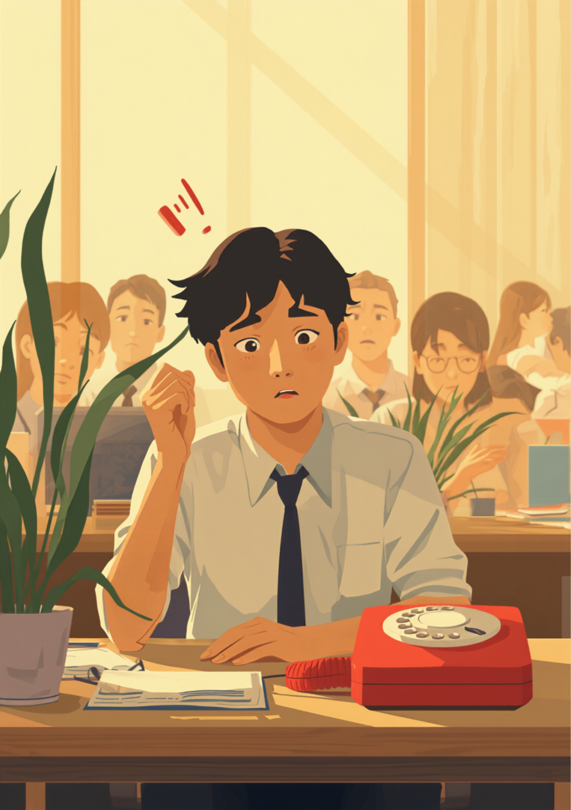

「なんで無視するの」と言われるたびに苦しかった、場面緘黙と仕事の摩擦
就労支援の現場で関わってきた中で、場面緘黙のある方から繰り返し聞いてきた言葉があります。「挨拶しても返事をしないから」という理由で、感じの悪い人だと思われていた、というものです。場面緘黙は、話す気がないわけでも、相手を無視しているわけでもありません。声を出そうとしても喉のあたりが締め付けられるような感覚があり、言葉がそこで止まってしまう、という状態に近いようです。それでも見た目からは伝わりにくいため、周囲には「愛想がない人」「変わった人」という印象だけが残ってしまうことがあります。
本人にとっては、話したい気持ちがあるのに声が出せないという状態そのものがつらく、加えて「また今日も何も言えなかった」という自己嫌悪が重なっていくことも少なくないようです。結果として、職場では静かに見える一方で、本人の中では毎日小さな緊張と焦りが積み重なっている、という目に見えないずれが生まれやすくなります。
「電話が鳴ると、まず体が固まります。出ないといけないのは分かってるんですけど、受話器を持っても『はい、〇〇です』の最初の一言がなかなか出てこなくて。無言のまま切ってしまったことも一度や二度じゃないです。そのたびに『また出なかったな』って自己嫌悪で、次はもっと構えちゃう悪循環でした。入社して3ヶ月くらいは、電話が鳴るたびに心臓がバクバクしてました。今はチャットで対応する業務に変えてもらえて、だいぶ楽になりました。」
家族となら話せるのに、なぜ職場では声が出ないのか
場面緘黙のある方が感じやすいのは、話す気があるかどうかではなく、場面そのものが引き金になっているという感覚です。家族や気心の知れた友人とは普通に会話できるのに、職場や初対面の人の前、大勢の視線が集まる場面になると、同じように言葉が出せなくなる。この差は、本人の意志の強さとは関係がないとされています。
このように話せる場面と話せない場面がはっきり分かれることは、場面緘黙のある方にとってはごく自然な感覚のようです。ただ、周りから見ると「家では普通に話すのに、職場ではなぜ黙っているのか」が理解しにくく、「気分屋」「わざと避けている」といった誤解につながりやすい部分でもあります。
「会議で意見を求められると、頭の中には言葉があるのに、それが声にならないんです。チャットに書けばすらすら書けるのに、口に出そうとすると喉の奥が締まる感じがして。何度か『やる気ないの?』って言われたことがあって、それが一番きつかったです。半年くらい悩んで、思い切って上司に『発言はチャットで先に共有させてもらえますか』って伝えたら、意外とあっさり通りました。もっと早く言えばよかったです。」
職場にどう伝える、誤解されずに働くために
場面緘黙のことを伝えるとき、症状の仕組みまで詳しく説明しようとすると、かえって伝わりにくくなることがあります。業務に関わる具体的な場面だけに絞って伝える方法が、双方にとって負担が少ないとされています。
具体的な場面に絞って伝えるという考え方
- 「電話対応が難しいので、チャットやメールでのやり取りに代えてもらえますか」
- 「会議での発言は、事前にチャットで共有させてもらえると助かります」
- 「大勢の前での自己紹介や挨拶は、一言だけでも大丈夫だと思ってもらえるとありがたいです」
- 「返事がすぐにできないときも、無視しているわけではないので、少し待ってもらえると助かります」
「前の職場で、朝礼の自己紹介の順番が回ってきたとき、名前の途中で声が止まってしまって。20人くらいの前で、しーんとした空気になって、結局身振りだけで乗り切りました。あのときの視線は今でも覚えてます。接客業だったので、お客様への挨拶もつらくて、結局1年で辞めました。今はデスクワーク中心の職場に転職して、少人数の打ち合わせだけは何とか声が出せるようになってきました。まだ電話は苦手ですけど。」
病名や症状の詳細まで伝える義務はありません。信頼できる上司や人事担当者に、業務に関わる範囲でまず共有し、そこからチーム内に必要な情報だけ広げてもらう、という進め方をとっている方もいるようです。就職活動の段階から「電話対応は難しいが、文章でのやり取りは問題ない」のように、できることとできないことをセットで伝えておくと、入社後の調整がしやすくなったという声も聞かれます。
使える制度と、一人で抱えないための相談先
精神障害者保健福祉手帳という選択肢
場面緘黙（選択性緘黙）は、精神障害者保健福祉手帳の対象となる診断区分に含まれるケースがあるとされています。ただし、診断名があるだけで自動的に手帳が交付されるわけではなく、症状の程度や日常生活・社会生活への影響度によって等級が判定される仕組みです。詳しくは主治医や自治体の障害福祉窓口に確認するのが確実です（2026年9月時点の情報です）。手帳を取得すると、障害者雇用枠での就職や、企業側の合理的配慮を前提にした働き方を選びやすくなる場合があります。
障害者雇用枠という選択肢
精神障害者保健福祉手帳を取得すれば、場面緘黙も障害者雇用制度の対象になるとされています。電話対応の免除やチャットでのコミュニケーションなど、具体的な配慮を前提とした求人を紹介してもらえる場合もあるようです（2026年9月時点の情報です）。就労移行支援事業所や障害者専門の転職エージェントに相談してみる方法もあります。
相談できる窓口
- 主治医・心療内科／精神科（症状の記録や、働き方についての意見書の相談）
- 職場に選任されている産業医（50人以上の事業場に選任義務あり）
- 自治体の障害福祉窓口、精神障害者保健福祉手帳の相談窓口
- 就労移行支援事業所（コミュニケーション面の準備を含めた就労準備や職場との調整）
よくある質問
関連記事
この記事に、聞いてみたいことはありますか？
「自分の場合はどうなんだろう」と思ったことを、気軽に書いてみてください。いただいた質問は個別にお返事したうえで、匿名で記事にすることがあります。
mimemime代表。就労支援の現場経験をもとに、障がいのある方の働く不安に寄り添う記事を執筆。